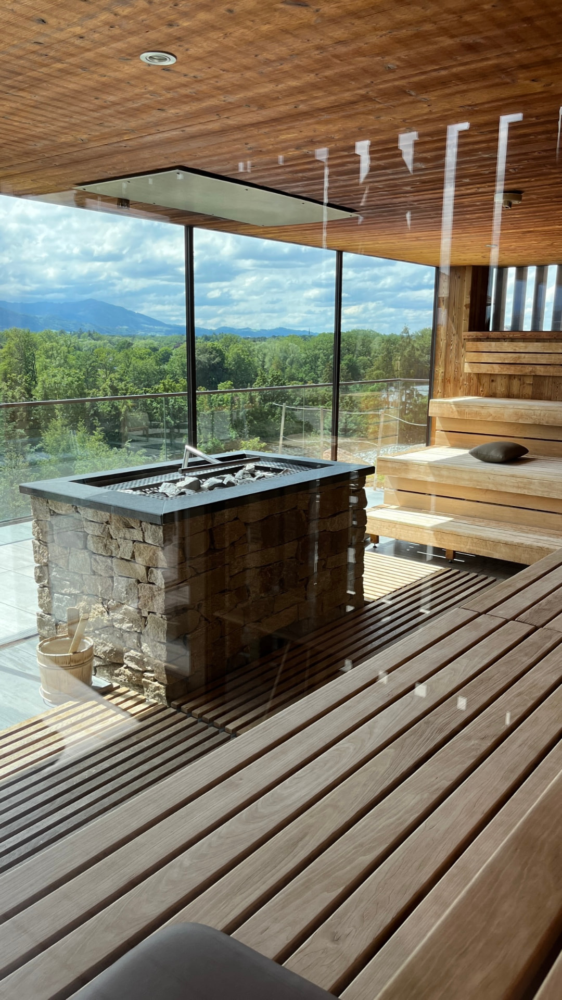
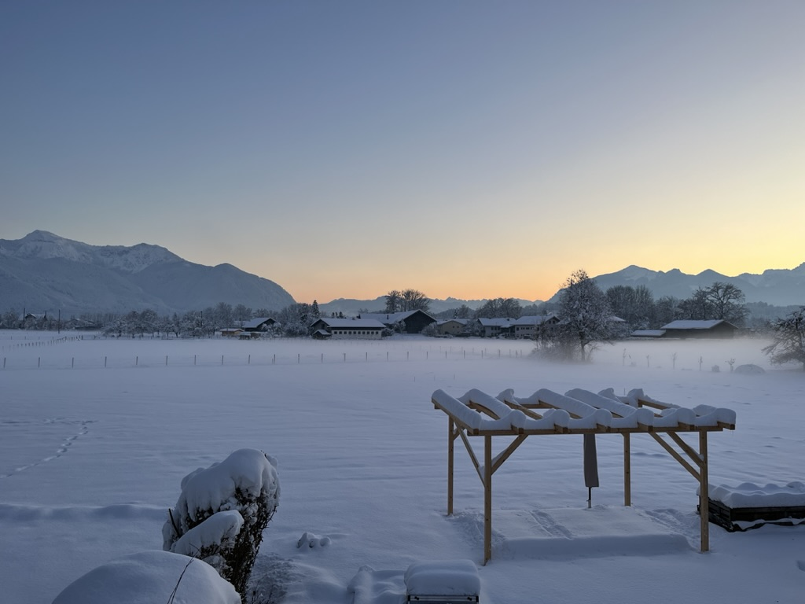
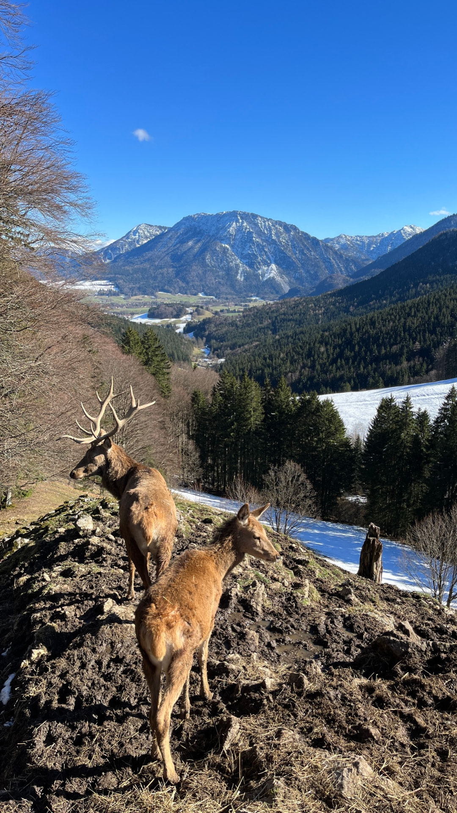
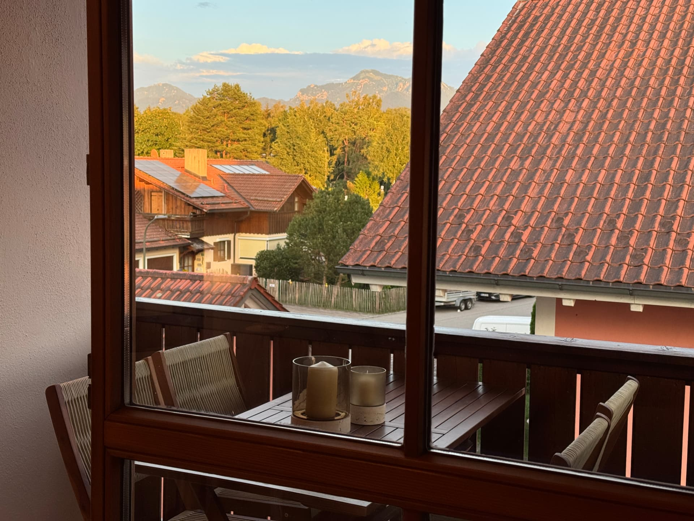

Jedes Wetter
Chiemsee bei Regen, mit Kindern und im Winter
Ausflüge bei schlechtem Wetter, Tipps mit Kindern und alles für den Winter im Chiemgau.

Bei schlechtem Wetter
- ▸Wenn es nicht in Strömen regnet: das Schloss von König Ludwig auf der Herreninsel mit Führung anschauen, danach auf der Fraueninsel einkehren.
- ▸Einen Ausflug nach Salzburg machen. Salzburg ist schnell erreichbar und wunderschön.
- ▸Evtl. Führung im Schloss/Burg Hohenaschau. (dort gibt es auch immer wieder Themenführungen für Kinder)
Bei Regen
- ▸Bummeln in Prien, z. B. der Amon Store (Fair Fashion Concept Store) oder in den Outlets in Bernau/Felden wie dem Marc O'Polo Outlet (in manchen Outlets ist auch die Gästekarte gültig).
- ▸Salzbergwerk Berchtesgaden.
- ▸Schwimmbad: Bernau (eher unspektakulär), sonst das Prienavera in Prien (drei Saunen) oder die Chiemgau Therme in Bad Endorf.
- ▸Sauna: Therme Bad Aibling, der Wellnessgarten Waging oder das Day Spa im Das Achental Resort, Grassau (bei Letzteren vorher anrufen und reservieren).
Mit Kindern
- ▸KrokoDeli Indoorspielplatz in Bad Aibling oder das Babalu in Traunstein bei Regen.
- ▸Café Salzkind, Prien bei schlechterem Wetter.
- ▸Märchenerlebnis Park Marquartstein mit Rodelbahn für die etwas jüngeren Kinder.
- ▸Freizeitpark Ruhpolding für die etwas größeren Kinder.
- ▸Café Wastelbauerhof, Bernau am Chiemsee — mit nettem Outdoor-Spielplatz.
- ▸Café Pauli in Aschau mit Streichelzoo und Spielplatz.
- ▸Kletterpark Parker Übersee: der schönste Hochseilgarten am Chiemsee — dort werden auch Kajaks oder SUPs verliehen.
- ▸Der Triassic Park auf der Steinplatte.
Skifahren
- ▸Kampenwand: nicht zu empfehlen, da einfach zu klein und zu wenig Schnee.
- ▸Skigebiet Winklmoosalm und Steinplatte: Parken Seegatterl (tolles, großes Skigebiet).
- ▸Skigebiet Kössen: etwas kleiner.
- ▸Bergbahnen St. Johann: größeres, schönes Skigebiet aber eher schattig.
- ▸Bergbahnen Fieberbrunn: riesiges Skigebiet mit tollen Pisten, jetzt sogar mit Saalbach Hinterglemm verbunden.
Rodeln (Schlittenfahren ;-))
- ▸Hochplattenbahn: mit der Bahn hoch.
- ▸Maisalm mit Wanderung (circa 30 Minuten Fußweg hoch).
- ▸Agersgschwendt Alm mit Wanderung (circa 1–1,5 h Fußweg hoch).
- ▸Hindenburghütte mit Bustransfer und Schlittenverleih in Reit im Winkl.
- ▸Wildbichlalm: Nähe Sachrang (circa 45 Minuten Fußweg hoch).



Ferienwohnung Bernau am Chiemsee
Wohne dort, wo Deine Ausflüge beginnen.
Das Bergloft ist eine nachhaltig kernsanierte 3-Zimmer-Dachgeschosswohnung für bis zu 4 Gäste — zwei Balkone mit Bergblick, 15 Gehminuten zum Chiemsee, kostenlose Garage und eine ruhige Sackgassenlage direkt am Bach.